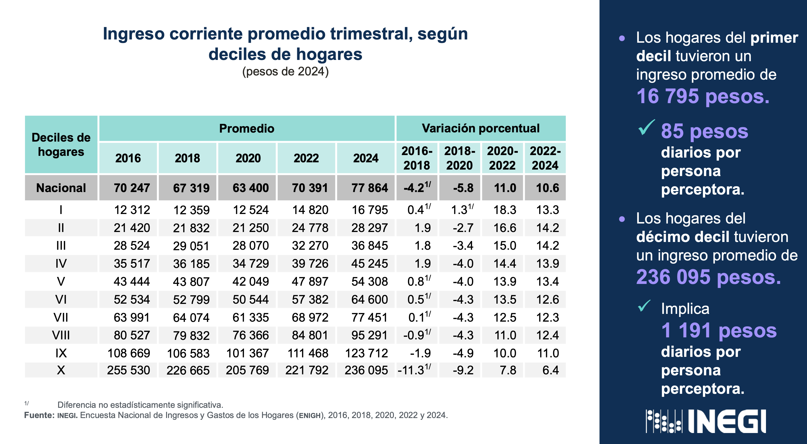
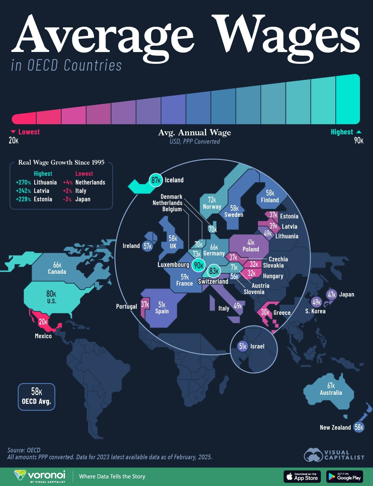
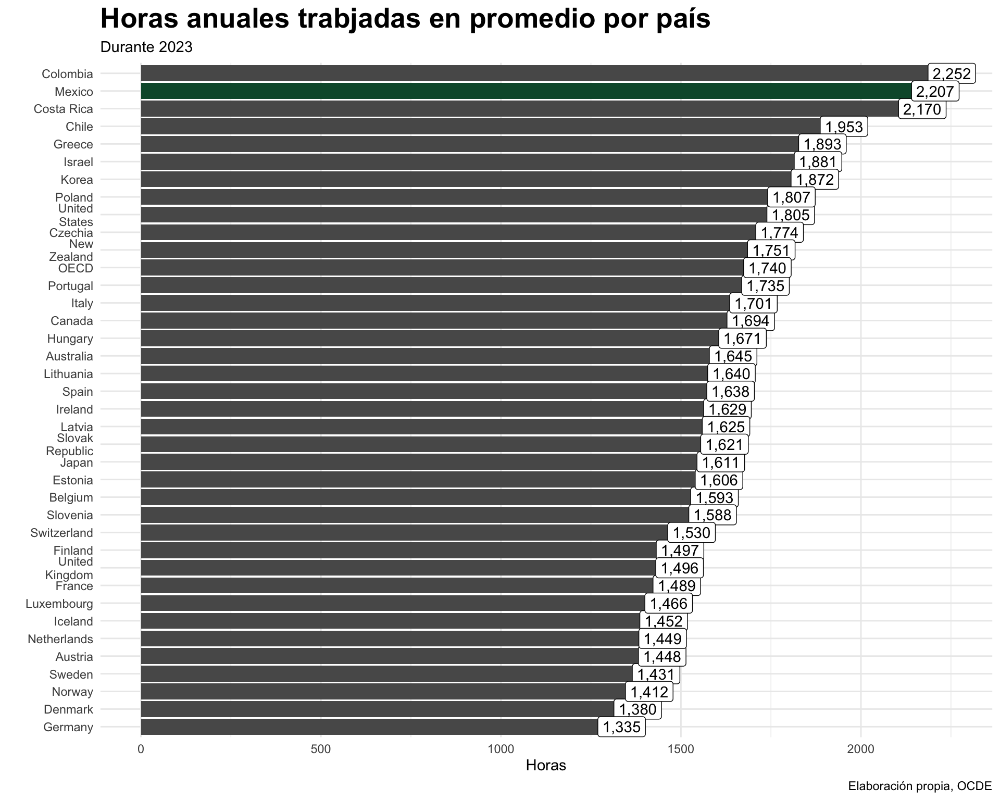
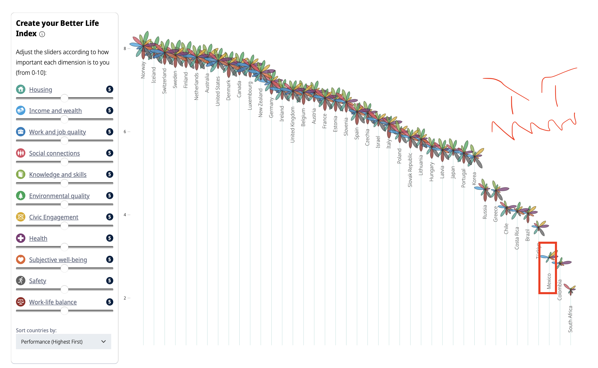
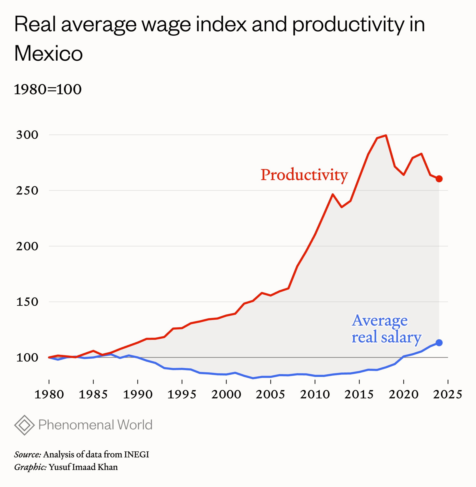
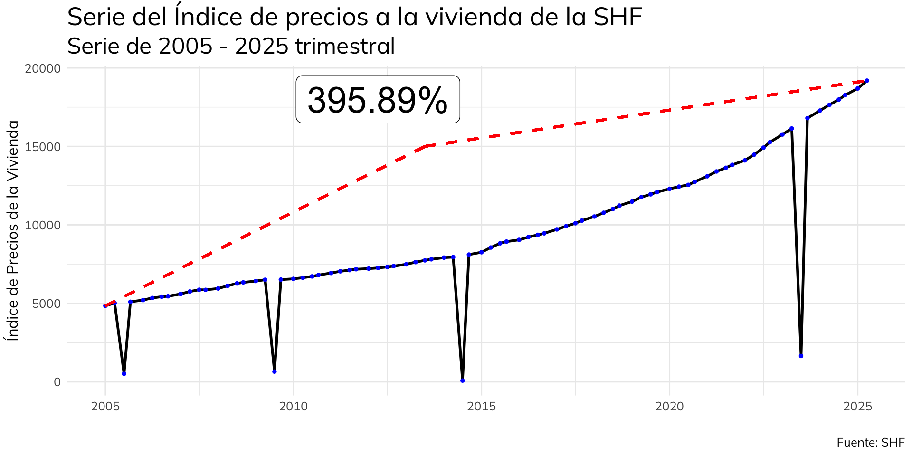
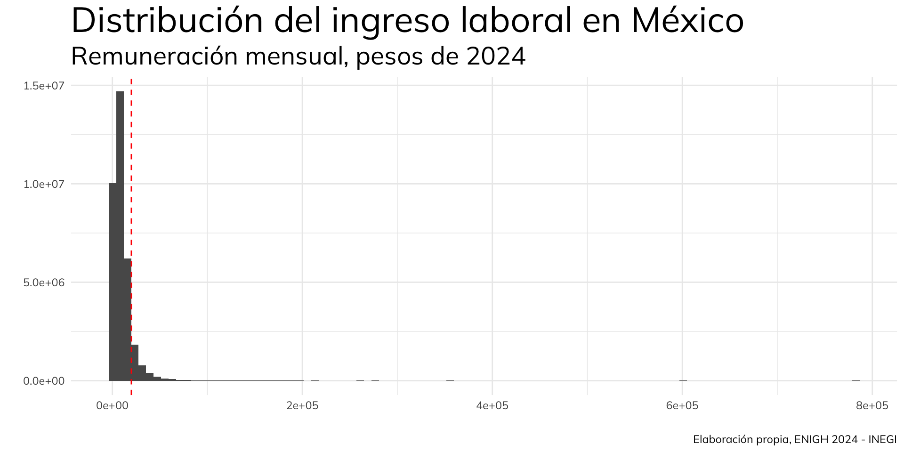

DAOA — 23/08/2025
Hace poco salió la ENIGH y a mí me estresa y me molesta mucho siempre la conversación al rededor de los datos publicados, entonces voy a hacer una pequeña ppt así medio fea que explique por qué.
El INEGI levanta cada 2 años la Encuesta Nacional de Ingresos y Gastos en los Hogares. Esta mide la distribución, monto y estructura de los ingresos y gastos de los hogares en México. Se levanta cada dos años con representatividad nacional, estatal y urbano-rural. Utiliza un diseño muestral probabilístico, estratificado y por conglomerados, y aplica factores de expansión para hacer inferencias poblacionales.
La realidad es que la ENIGH es un excelente y muy importante instrumento de medición económica, pero la presentación de resultados siempre me deja con una incógnita muy seria, que refiere a la distribución de ingresos.
Distribución de Ingresos
Pasa que, yo siempre, como persona y señor competitivo, me gusta compararme y siempre me cuesta trabajo entender esa última tabla de distribución del ingreso.
Particularmente porque la definición de Ingreso Corriente Trimestral Promedio engloba un montón de cosas y en principio a mí me interesa:
No dimensionamos correctamente lo extremadamente desigual, sí, pero también lo pobre e injusto que se ha vuelto este país. Me da la impresión que las lecturas que sacamos de esta encuesta la mayoría son un poco sesgadas y superficiales y por alguna razón nadie pega el puto grito al cielo como yo. Hay que verla como quien la ve desde fuera para que exista ese enojo, supongo.

México es, de entre la lista de 35 países de la OCDE (faltaría aquí incluir a Chile, Colombia y Costa Rica), en 2023 (último año de la medición) el país con el menor salario promedio anual ajustado a precios de todos los países.
Es decir, somos, con distancia LOS MÁS POBRES. Los que menos cosas pueden comprar, los que menos capital acumulan. Me molesta que del internacionalismo sólo se quedó el odio a los gringos y se ha perdido la idea de compararse con otros países términos económicos. La noción de que somos muy distintos nos aleja de concebir realidades distintas a la nuestra, que, hay que VER POR FAVOR, es jodida.
Hubiera actualizado la cifra pero la página de la OCDE no funciona.
Dijeras tú, ganamos poco pero vivimos de ver el monte y la vida contemplativa. Vete a la verga, aquí nos explotamos como nadie, y no pendejamente.
Dimensionemos que, en promedio son 2,207 horas de trabajo al año, que nos da semanas de 42 horas laborales, en promedio.
Hay una discusión de si las 40 horas y que si sí y que si no. Mamón trabajamos hasta 30% más horas que JAPÓN donde según la cultura laboral es tan cabona que la gente neta se mure de lo mucho que chambea y cosas así. Sólo COLOMBIA chambea más que nosotros.
Somos necios acá y como que el torpe orgullo nacionalista malencausado no nos permite ver que de heuvos las cosas no están bien, por donde le quieras ver papito.
Agárrate el indice compuesto de bienestar de la OCDE que mide un montón de cosas como acceso a la vivienda, calidad de trabajo, salud, bienestar autorreportado, etc. SOMOS, tras un montón de configuraciones y demás, neta aún intentando truquearlo, el tercer país peor rankeado.
Que qué puto neoliberal que cómo me gusta hacerle el juego a la derecha, que por qué no simplemente doy gracias de andar acá, no pendejo, simplemente me gustaría no estar sumido en la verga, porque pa pronto en esto yo no ando perdidendo, pero ocupo que todos VEAMOS que de huevos no estamos ganando. Diría la señora esa NO ES NORMAL PTM.
Estra gráfica la he visto en muchas formas, en múltiples presentaciones a lo largo de mi vida. A mí en lo personal me da PESADILLAS ALV. No doy con la fuente, pero si el titular de la CONASAMI la usa para su artículo me parece válido ponerla aquí.
Sí topan que el salario promedio A PENAS ES MÁS ALTO QUE EL DE 1985, nono, váyanse alv, porque esta va con la siguiente.
Ocupo que la gente tope que todo se ha hecho considerablemente más putas caro desde 1985 wey, como la vivienda. Y es que no mames, ya neta es imposible pensar en hacerse de una propiedad en este perro país. No es justo, esta REALIDAD TANGIBLE, afecta la cognición de nuestro futuro, porque se siente como si no lo hubiera.
Lo pongo en grande para que la gente tope que según la Sociedad Hipotecaria Federal, sólo desde el 2005 a la fecha, en promedio los precios a la vivienda NACIONALMENTE han crecido en 395%.
¿Sí topan que 395%>13% de incremento en el salario promedio? Cómo nos va a alcanzar hijos de la verga.
Adicional a eso yo vivo en la tonta CDMX y en la Zona Metropolitana han crecido en 437%, sólo en la CDMX en 517%.
O sea todo está por lo menos 4.8 veces más caro de que yo nací, la vivienda hasta 5 veces más cara (no es más porque no da la serie) y el salario promedio menos del 13% más alto, o sea todo DE LA VERGA pues.
Yo quiero mucho este país, pero me molesta un tanto que la conversación se ha vuelto un poco árida en cuanto a la economía. Creo que falta reconocimiento, tanto de las autoridades como de la sociedad, de los grandes retos que hay que aforntar.
Me parece que, si bien han perdido vigencia los postulados del neoliberalismo clásico, nos hemos resignado de alguna suerte a lo que es este país hoy en día.
Un país que crece poco, que no tiene muchas ideas para incentivar el emprendedurismo, que no está dispuesto a agarrarse a chingadazos con los millonarios y hacerse de los medios de producción y por lo tanto deja a sus próximas generaciones (YO ALV) desprovistas de oportunidades para hacerse de un futuro.
Como morro de ciudad, creo que, como todos los jóvenes, hoy padecemos de la pérdida de derechos laborales traidas por el neoliberalismo desde el 94. Incremento generalizado de los bienes inmuebles al grado de hacerse incosteables y todo eso compaginado con altísimas presiones para “sobresalir”.
Ya me estoy yendo alv nivel fightclub pero sí hay algo en el mame de que todo el tiempo estamos expuestos a vidas de las cuales NO SOMOS PARTÍCIPES, generando anomia y cosas así. Yo por eso con AMLO alv y sus ideas moralizantes sobre lo que es la vida y el deber ser de la política.
Pero últimamente me sigo estresando por el futuro de este país y no le veo salida alv y por eso esta ppt.
La realidad es que yo configuro, haciendo la simple adición de todo lo previo, un futuro bastante gris. Cuando se terminen de asentar este tipo de procesos de marginalización y concentración del capital, ¿cómo reaccionará nuestra sociedad?
Si ante la incógnita de cómo lograr un proyecto de vida y qué es aquello que se lo impide no puede formularse una respuesta, ¿a dónde lo llevará su frustración?.
No es casualidad que la juventud se vea tristemente a la vida criminal, los tik toks de rosa pastel y los payasitos esos también del tiktok, en conjunto con las enfermedades mentales vayan a la alza en este país con el panorama. Sin embargo, postulo que, como mencionaba AMLO, la red familiar y el tejido social extendido del país es en realidad la institución que resuelve en su mayoría las carencias de esta generación. Pero, ¿y cuando ellos se hayan ido y quedemos nosotros?
Será que el proyecto de la nueva izquierda mexicana logrará configurar un contrapeso al enorme e inmenso proceso de acumulación y permitirá que la generación de riqueza y el mecanismo de valor agregado del capitalismo floresca? Sueño húmedo tecnócrata.
Pasa que yo no creo que, dado que el mundo juega al capitalismo, podamos ignorar la realidad del sistema globalista y sus tentáculos aquí. No creo que un mundo en el que quepan todos los mundos pueda ignorar la injerencia del gran orden económico mundial, del sistema financiero global, y de todas esas chingaderas que vinieron a vender la generación pasada de economistas del WTO.
Al final del día construyeron hegemonía y la disidencia se castiga como en Cuba, como en Venezuela, incluso como en Rusia. ¿Qué futuro auguramos? Sepa la verga.
Pero ese sentir, de ausencia de futuro, va junto con pegado de la euforia de lo pasajero y la añoranza de lo perdido. Todo, creo, presente en la escena nacional musical, con SEXOLANDIA 2 y tragaperras moviendo la CDMX.
Regresando a lo que me trajo aquí de inicio.
Primero, nosotros hacemos la medición de la riqueza de forma trimestral y por hogares; esto está bien y todo pero a mí se me hace mucho más natural, como asalariado que somos uno de los 23.59 millones de asalariados afiliados al imss, medirlo con mi sueldo mensual.
Para ello la transformación que haremos es:
\[ IngM = \frac{IngLaboral}{NEmpleados} * \frac{1}{3} \]
Que, tomando el concentrado del inegi se ve como:
Ahora, recordemos que es una encuesta esta cosa, por lo que tenemos que ajustar por factor para poder obtener de forma correcta la distribución del ingreso, por lo que usamos srvyr o survey.
library(survey)
library(srvyr)
survey_trabajadores <- svydesign(ids = ~folioviv, weights = ~factor, data = concentrado_trabajadores)
deciles <- svyquantile(~ingreso_mensual_pp, survey_trabajadores, quantiles = seq(0.1, 0.9, 0.1), na.rm = TRUE)
deciles$ingreso_mensual_pp quantile ci.2.5 ci.97.5 se
0.1 0.000 0.000 130.4333 33.27392
0.2 1834.238 1713.963 1956.5211 61.87718
0.3 4108.695 4027.172 4206.5200 45.75219
0.4 5942.933 5901.637 6032.7833 33.45589
0.5 7630.433 7540.983 7716.0300 44.65491
0.6 9281.418 9180.323 9391.3033 53.82160
0.7 11421.407 11289.106 11571.4217 72.01965
0.8 14398.923 14217.383 14581.9600 93.00455
0.9 19972.817 19672.130 20353.0167 173.69614Piensen en este número. El 90% de los trabajadores de este país, de acuerdo a esta encuesta, ganan menos que este número al mes. Revisemos la distribución.
Está tan degenerada la gráfica que hay que censurar los valores más altos para verla correctamente.
Algo raro de la gráfica es el pico en el origen. Revisando, encontramos que es porque 14.5% de aquellos declarados ocupados NO TIENEN un ingreso laboral.
Se antoja extraño que que el 14.5% de las personas que se declararon ocupadas no mantengan un salario.
Unas hipótesis:
cuts <- svyquantile(~ingreso_mensual_pp, survey_trabajadores,
quantiles = c(0.0, 0.99), na.rm = TRUE)
concentrado_trabajadores <- concentrado_trabajadores %>%
mutate(ingreso_mensual_pp = ifelse(ingreso_mensual_pp>50258.14, 50258.14,ingreso_mensual_pp ))
concentrado_trabajadores %>%
ggplot(aes(ingreso_mensual_pp, weights = factor))+
geom_histogram(bins = 100)+
geom_vline(xintercept = 19972.8, colour = 'red', linetype = 'dashed')+
theme_minimal()+
labs(x = '', y = '', title = 'Distribución del ingreso laboral en México', subtitle = 'Remuneración mensual, pesos de 2024',
caption = 'Elaboración propia, ENIGH 2024 - INEGI')+
theme(text = element_text(family = 'mulish'),
plot.title = element_text(size = 28, face = 'bold'),
plot.subtitle = element_text(size = 20))Cambiando los deciles y el rango ahora, una serie de puntializaciones:
Sí ubican que a mí no me alcanza pero para una chingada en este país? Que me parece imposible hacerme de una familia y de una propiedad con los tres pesos que gano y aún así formo parte del décimo decil?
Está fuerte cawn. Chécale tú: